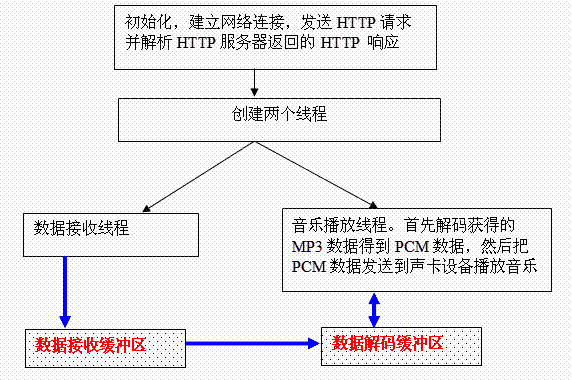
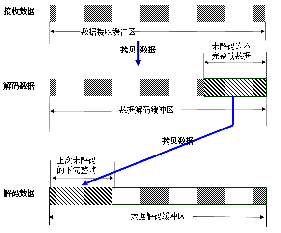
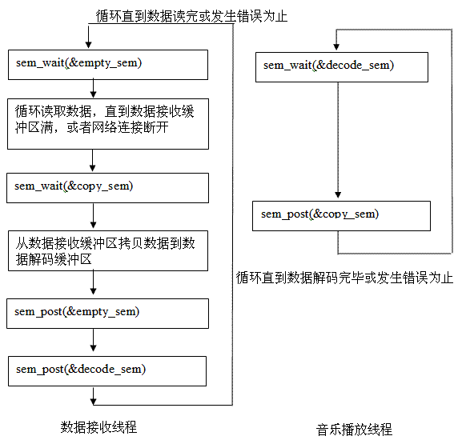
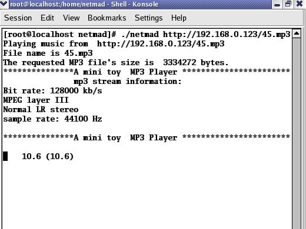

本文在 Fedora 5 Linux 下实现了一个基于 libmad 的 MP3 流媒体播放器。此流媒体播放器可以播放基于 HTTP 1.1 协议传输的 MP3 流媒体数据。
基本原理是：从 HTTP 服务器获得 MP3 媒体信息，然后通过网络传输把 MP3 数据以数据流的形式接收到 MP3 流媒体播放器客户端，由客户端通过 libmad 解码 MP3 数据流，得到 PCM 音频数据，写入音频设备，播放音乐。本文的流媒体播放器只是实现了必要的简单功能，没有考虑太多情况。比如，没有考虑实时播放控制，这样的话就不能随意选 取播放点进行播放。
本文的 MP3 流媒体播放器创建两个线程，使用两个缓冲区保存 MP3 数据，可以一边下载数据，一边播放音乐。编译运行此 MP3 流媒体播放器需要安装 libmad (www.underbit.com/products/mad/) 以及 ALSA(Advanced Linux Sound Architecture) (http://www.alsa-project.org)相关的软件。ALSA包括4部分，分别是 sound driver, sound library , sound utilities 以及 tools。至少应该安装 sound driver, sound library 。编译程序时连接库的选项是：-lmad -lasound -lpthread。
本文的 MP3 流媒体播放器使用双缓冲区，一个是数据接收缓冲区，另一个是数据解码缓冲区。主程序结构如下图所示，图中的蓝色线表示数据流向。
图 1：MP3 流媒体播放器主程序结构图

MAD（libmad）是一个开源的高精度 MPEG 音频解码库，支持 MPEG-1（Layer I, Layer II 和 LayerIII（也就是 MP3）。LIBMAD 提供 24-bit 的 PCM 输出，完全是定点计算，非常适合没有浮点支持的平台上使用。使用 libmad 提供的一系列 API，就可以非常简单地实现 MP3 数据解码工作。在 libmad 的源代码文件目录下的 mad.h 文件中，可以看到绝大部分该库的数据结构和 API 等。
本文用到的 libmad 中的主要数据结构有：struct mad_stream, struct mad_synth, struct mad_frame。它们的定义如下：
清单 1：libmad 中的主要数据结构
struct mad_stream {
unsigned char const *buffer; /* input bitstream buffer */
unsigned char const *bufend; /* end of buffer */
unsigned long skiplen; /* bytes to skip before next frame */
int sync; /* stream sync found */
unsigned long freerate; /* free bitrate (fixed) */
unsigned char const *this_frame; /* start of current frame */
unsigned char const *next_frame; /* start of next frame */
struct mad_bitptr ptr; /* current processing bit pointer */
struct mad_bitptr anc_ptr; /* ancillary bits pointer */
unsigned int anc_bitlen; /* number of ancillary bits */
unsigned char (*main_data)[MAD_BUFFER_MDLEN];
/* Layer III main_data() */
unsigned int md_len; /* bytes in main_data */
int options; /* decoding options (see below) */
enum mad_error error; /* error code (see above) */
};
|
如果缓冲区最后一个 MPEG 数据帧只有部分数据包括在缓冲区中，那么 struct mad_stream 中的 next_frame 域指到不完整数据的开始地址。由于缓冲区的 MPEG 数据帧不一定完整，所以不完整的 MPEG 帧的数据必须拷贝到下一次解码操作的缓冲区中，进行再次解码。这里我们还看到 bufend 指向缓冲区数据的最后地址，也就是最后一字节的地址加 1 的位置。mad_stream.bufend – mad_stream.next_frame 就是剩余的未被解码的 MPEG 帧的数据的字节数量（假设此帧在缓冲区中不完整）。mad_stream 的 error 域用来记录操作 mad_stream 得到的错误代码。错误代码在 mad.h 中有很详细的定义。
清单 2：错误代码在 mad.h 中的详细定义
struct mad_synth {
mad_fixed_t filter[2][2][2][16][8]; /* polyphase filterbank outputs */
/* [ch][eo][peo][s][v] */
unsigned int phase; /* current processing phase */
struct mad_pcm pcm; /* PCM output */
};
|
mad_synth 中的关键域 pcm 保存解码和合成后得到的 PCM 数据。
清单 3：
mad_synth 中的关键域
struct mad_pcm {
unsigned int samplerate; /* sampling frequency (Hz) */
unsigned short channels; /* number of channels */
unsigned short length; /* number of samples per channel */
mad_fixed_t samples[2][1152]; /* PCM output samples [ch][sample] */
};
|
struct mad_pcm 定义了音频的采样率、每个声道个数以及最后的 PCM 采样数据。这些参数可用来初始化音频设备。
清单 4：struct mad_pcm
struct mad_frame {
struct mad_header header; /* MPEG audio header */
int options; /* decoding options (from stream) */
mad_fixed_t sbsample[2][36][32]; /* synthesis subband filter samples */
mad_fixed_t (*overlap)[2][32][18]; /* Layer III block overlap data */
};
|
mad_frame 是记录 MPEG 帧解码后的数据的数据结构，其中的 mad_header 尤其重要，其用来记录 MPEG 帧的一些基本信息，比如 MPEG 层数、声道模式、流比特率、采样比特率等等。声道模式包括单声道、双声道、联合立体混音声以及一般立体声。
清单 5：mad_frame
enum mad_mode {
MAD_MODE_SINGLE_CHANNEL = 0, /* single channel */
MAD_MODE_DUAL_CHANNEL = 1, /* dual channel */
MAD_MODE_JOINT_STEREO = 2, /* joint (MS/intensity) stereo */
MAD_MODE_STEREO = 3 /* normal LR stereo */
};
struct mad_header {
enum mad_layer layer; /* audio layer (1, 2, or 3) */
enum mad_mode mode; /* channel mode */
int mode_extension; /* additional mode info */
enum mad_emphasis emphasis; /* de-emphasis to use */
unsigned long bitrate; /* stream bitrate (bps) */
unsigned int samplerate; /* sampling frequency (Hz) */
unsigned short crc_check; /* frame CRC accumulator */
unsigned short crc_target; /* final target CRC checksum */
int flags; /* flags */
int private_bits; /* private bits */
mad_timer_t duration; /* audio playing time of frame */
};
|
下面就本文使用的 API 的功能做简单介绍。
在本文中用到的 API 包括：
void mad_stream_init(struct mad_stream *) void mad_synth_init(struct mad_synth *); void mad_frame_init(struct mad_frame *); |
以上3个 API 初始化解码需要的数据结构。
void mad_stream_buffer(struct mad_stream *, unsigned char const *, unsigned long); |
此函数把原始的未解码的 MPEG 数据和 mad_stream 数据结构关联，以便使用 mad_frame_decode( ) 来解码 MPEG 帧数据。
int mad_frame_decode(struct mad_frame *, struct mad_stream *); |
把 mad_stream 中的 MPEG 帧数据解码。
void mad_synth_frame(struct mad_synth *, struct mad_frame const *); |
把解码后的音频数据合成 PCM 采样。
void mad_stream_finish(struct mad_stream *); void mad_frame_finish(struct mad_frame *); mad_synth_finish(struct mad_synth); |
以上 3 个 API 在解码完毕后使用，释放 libmad 占用的资源等。
对音频设备的操作主要是初始化音频设备以及往音频设备发送 PCM（Pulse Code Modulation）数据。为了方便，本文使用 ALSA（Advanced Linux Sound Architecture）提供的库和驱动。在编译和运行本文中的 MP3 流媒体播放器的时候，必须先安装 ALSA 相关的文件。
本文用到的主要对 PCM 设备操作的函数分为 PCM 设备初始化的函数以及 PCM 接口的一些操作函数。
PCM 硬件设备参数设置和初始化的函数有：
int snd_pcm_hw_params_malloc (snd_pcm_hw_params_t **ptr)
int snd_pcm_hw_params_any (snd_pcm_t *pcm, snd_pcm_hw_params_t *params)
void snd_pcm_hw_params_free (snd_pcm_hw_params_t *obj)
int snd_pcm_hw_params_set_access ( snd_pcm_t *pcm,
snd_pcm_hw_params_t *params,
snd_pcm_access_t _access)
int snd_pcm_hw_params_set_format ( snd_pcm_t *pcm,
snd_pcm_hw_params_t *params,
snd_pcm_format_t val)
int snd_pcm_hw_params_set_channels(snd_pcm_t *pcm,
snd_pcm_hw_params_t *params,
unsigned int val)
int snd_pcm_hw_params_set_rate_near(snd_pcm_t *pcm,
snd_pcm_hw_params_t *params,
unsigned int *val, int *dir)
|
PCM 接口的操作函数：
int snd_pcm_hw_params (snd_pcm_t *pcm, snd_pcm_hw_params_t *params)
int snd_pcm_prepare (snd_pcm_t *pcm)
int snd_pcm_open (snd_pcm_t **pcm, const char *name,
snd_pcm_stream_t stream, int mode)
int snd_pcm_close (snd_pcm_t *pcm)
snd_pcm_sframes_t snd_pcm_writei (snd_pcm_t *pcm,
const void *buffer, snd_pcm_uframes_t size)
|
这些函数用到了 snd_pcm_hw_params_t 结构，此结构包含用来播放 PCM 数据流的硬件信息配置。在往音频设备（声卡）写入音频数据之前，必须设置访问类型、采样格式、采样率、声道数等。
首先使用 snd_pcm_open () 打开 PCM 设备，在 ALSA 中，PCM 设备都有名字与之对应。比如我们可以定义 PCM 设备名字为 char *pcm_name = "plughw:0,0"。
最重要的 PCM 设备接口是“plughw”以及“hw”接口。
使用“plughw”接口，程序员不必过多关心硬件，而且如果设置的配置参数和实际硬件支持的参数不一致，ALSA
会自动转换数据。如果使用“hw”接口，我们就必须检测硬件是否支持设置的参数了。Plughw
后面的两个数字分别表示设备号和次设备（subdevice）号。
snd_pcm_hw_params_malloc( ) 在栈中分配 snd_pcm_hw_params_t 结构的空间，然后使用 snd_pcm_hw_params_any( ) 函数用声卡的全配置空间参数初始化已经分配的 snd_pcm_hw_params_t 结构。snd_pcm_hw_params_set_access ( ) 设置访问类型，常用访问类型的宏定义有：
SND_PCM_ACCESS_RW_INTERLEAVED |
交错访问。在缓冲区的每个 PCM 帧都包含所有设置的声道的连续的采样数据。比如声卡要播放采样长度是 16-bit 的 PCM 立体声数据，表示每个 PCM 帧中有 16-bit 的左声道数据，然后是 16-bit 右声道数据。
SND_PCM_ACCESS_RW_NONINTERLEAVED |
非交错访问。每个 PCM 帧只是一个声道需要的数据，如果使用多个声道，那么第一帧是第一个声道的数据，第二帧是第二个声道的数据，依此类推。
函数 snd_pcm_hw_params_set_format() 设置数据格式，主要控制输入的音频数据的类型、无符号还是有符号、是 little-endian 还是 bit-endian。比如对于 16-bit 长度的采样数据可以设置为：
SND_PCM_FORMAT_S16_LE 有符号16 bit Little Endian SND_PCM_FORMAT_S16_BE 有符号16 bit Big Endian SND_PCM_FORMAT_U16_LE 无符号16 bit Little Endian SND_PCM_FORMAT_U16_BE 无符号 16 bit Big Endian |
比如对于 32-bit 长度的采样数据可以设置为：
SND_PCM_FORMAT_S32_LE 有符号32 bit Little Endian SND_PCM_FORMAT_S32_BE 有符号32 bit Big Endian SND_PCM_FORMAT_U32_LE 无符号32 bit Little Endian SND_PCM_FORMAT_U32_BE 无符号 32 bit Big Endian |
函数 snd_pcm_hw_params_set_channels() 设置音频设备的声道，常见的就是单声道和立体声，如果是立体声，设置最后一个参数为2。snd_pcm_hw_params_set_rate_near () 函数设置音频数据的最接近目标的采样率。snd_pcm_hw_params( ) 从设备配置空间选择一个配置，让函数 snd_pcm_prepare() 准备好 PCM 设备，以便写入 PCM 数据。snd_pcm_writei() 用来把交错的音频数据写入到音频设备。
初始化 PCM 设备的例程如下：
清单 6：初始化 PCM 设备的例程
/* open a PCM device */
int open_device(struct mad_header const *header)
{
int err;
snd_pcm_hw_params_t *hw_params;
char *pcm_name = "plughw:0,0";
int rate = header->samplerate;
int channels = 2;
if (header->mode == 0) {
channels = 1;
} else {
channels = 2;
}
if ((err = snd_pcm_open (&playback_handle,
pcm_name, SND_PCM_STREAM_PLAYBACK, 0)) < 0) {
printf("cannot open audio device %s (%s)\n",
pcm_name,
snd_strerror (err));
return -1;
}
if ((err = snd_pcm_hw_params_malloc (&hw_params)) < 0) {
printf("cannot allocate hardware parameter structure (%s)\n",
snd_strerror (err));
return -1;
}
if ((err = snd_pcm_hw_params_any (playback_handle, hw_params)) < 0) {
printf("cannot initialize hardware parameter structure (%s)\n",
snd_strerror (err));
return -1;
}
if ((err = snd_pcm_hw_params_set_access (playback_handle, hw_params,
SND_PCM_ACCESS_RW_INTERLEAVED)) < 0) {
printf("cannot set access type (%s)\n",
snd_strerror (err));
return -1;
}
if ((err = snd_pcm_hw_params_set_format (playback_handle,
hw_params, SND_PCM_FORMAT_S32_LE)) < 0) {
printf("cannot set sample format (%s)\n",
snd_strerror (err));
return -1;
}
if ((err = snd_pcm_hw_params_set_rate_near (playback_handle,
hw_params, &rate, 0)) < 0) {
printf("cannot set sample rate (%s)\n",
snd_strerror (err));
return -1;
}
if ((err = snd_pcm_hw_params_set_channels (playback_handle,
hw_params, channels)) < 0) {
printf("cannot set channel count (%s)\n",
snd_strerror (err));
return -1;
}
if ((err = snd_pcm_hw_params (playback_handle,
hw_params)) < 0) {
printf("cannot set parameters (%s)\n",
snd_strerror (err));
return -1;
}
snd_pcm_hw_params_free (hw_params);
if ((err = snd_pcm_prepare (playback_handle)) < 0) {
printf("cannot prepare audio interface for use (%s)\n",
snd_strerror (err));
return -1;
}
return 0;
}
|
这里配置的 PCM 格式是 SND_PCM_FORMAT_S32_LE，采样的格式是每个采样有 32-bit 的数据，数据按照 little-endian 存放。如果通过 mad_frame_decode() 函数得到 PCM 数据后，要求每个采样数据只占 16-bit，需要把数据进行MAD的定点类型到 signed short 类型进行转换。那么，PCM 数据如何写入声卡中呢？函数实现例程如下所示：
清单 7：PCM 数据写入声卡函数实现例程
while (nsamples--) {
/* nsamples 是采样的数目 */
signed int sample;
sample = pcm->samples[0][j];
*(OutputPtr++) = sample & 0xff;
*(OutputPtr++) = (sample >> 8);
*(OutputPtr++) = (sample >> 16);
*(OutputPtr++) = (sample >> 24);
if (nchannels == 2) {
sample = pcm->samples[1][j];
*(OutputPtr++) = sample & 0xff;
*(OutputPtr++) = sample >> 8;
*(OutputPtr++) = (sample >> 16);
*(OutputPtr++) = (sample >> 24);
}
j++;
}
if ((err = snd_pcm_writei (playback_handle, buf, samples)) < 0) {
err = xrun_recovery(playback_handle, err);
if (err < 0) {
printf("Write error: %s\n", snd_strerror(err));
return -1;
}
}
|
这里用到了 http://www.alsa-project.org/ 关于 ALSA 文档中的例子函数 xrun_recovery( )。详细例子请参见 http://www.alsa-project.org/alsa-doc/alsa-lib/_2test_2pcm_8c-example.html。使用此函数的目的是避免出现由于网络原因，声卡不能及时得到音频数据而使得 snd_pcm_writei() 不能正常连续工作。实际上在 xrun_recovery( ) 中，又调用 snd_pcm_prepare() 和 snd_pcm_resume() 以实现能“恢复错误”的功能。-EPIPE 错误表示应用程序没有及时把 PCM 采样数据送入ASLA 库。xrun_recovery() 函数如下所示：
清单 8：
xrun_recovery() 函数
int xrun_recovery(snd_pcm_t *handle, int err)
{
if (err == -EPIPE) { /* under-run */
err = snd_pcm_prepare(handle);
if (err < 0)
printf("Can't recovery from underrun, prepare failed: %s\n",
snd_strerror(err));
return 0;
} else if (err == -ESTRPIPE) {
while ((err = snd_pcm_resume(handle)) == -EAGAIN)
sleep(1); /* wait until the suspend flag is released */
if (err < 0) {
err = snd_pcm_prepare(handle);
if (err < 0)
printf("Can't recovery from suspend, prepare failed: %s\n",
snd_strerror(err));
}
return 0;
}
return err;
}
|
知道了具体的音频设备操作方法，就该使用 MAD 提供的函数具体实现解码了。函数 mp3_decode_buf( ) 提供了使用 libmad 解码的方法。首先调用 mad_stream_buffer() 函数把 MP3 流数据和 decode_stream 关联，然后开始循环解码数据。如果在解码数据过程中，有不完整 PCM 数据帧，那么 decode_stream.error 的值就是 MAD_ERROR_BUFLEN，且 decode_stream.next_frame 不为 NULL。这时候，把剩余的未解码的数据再拷贝到数据解码缓冲区里。 mad_frame_decode( ) 函数从 decode_stream 中得到 PCM 数据。
清单 9：
mad_frame_decode( ) 函数从 decode_stream 中得到 PCM 数据
int mp3_decode_buf(char *input_buf, int size)
{
int decode_over_flag = 0;
int remain_bytes = 0;
int ret_val = 0;
mad_stream_buffer(&decode_stream, input_buf, size);
decode_stream.error = MAD_ERROR_NONE;
while (1)
{
if (decode_stream.error == MAD_ERROR_BUFLEN) {
if (decode_stream.next_frame != NULL) {
remain_bytes = decode_stream.bufend - decode_stream.next_frame;
memcpy(input_buf, decode_stream.next_frame, remain_bytes);
return remain_bytes;
}
}
ret_val = mad_frame_decode(&decode_frame, &decode_stream);
/* 省略部分代码 */
...
if (ret_val == 0) {
if (play_frame(&decode_frame) == -1) {
return -1;
}
}
/* 后面代码省略 */
...
}
return 0;
}
|
本文使用 POSIX 线程库（pthreads）来创建线程。比如，本文需要两个线程，一个是数据接收线程，另一个是音乐播放线程。创建线程的程序如下所示：
清单 10：创建线程
ret_val = pthread_create(&thread[0],
NULL,
get_http_content,
&read_val);
if (ret_val != 0) {
printf("Cannot create get_http_content thread!\n");
return 1;
}
ret_val = pthread_create(&thread[1],
NULL,
play_http_content,
&read_val);
if (ret_val != 0) {
printf("Cannot create play_http_content thread!\n");
return 1;
}
pthread_join(thread[0], NULL);
pthread_join(thread[1], NULL);
|
可以看到，数据接收线程的线程主函数是 get_http_content， 而播放音乐的线程主函数是 play_http_content。创建子线程后，主线程调用 pthread_join() 等待子结束，并释放线程相关资源。
由于 MP3 流媒体数据是在 HTTP 服务器的文件目录中，所以，必须由客户端发送 HTTP 请求，然后得到相关 URL 的 HTTP 响应。HTTP 的请求格式如下：
<Method> <Request-URI> <HTTP-1.x> CRLF *(( general-header | request-header | entity-header ) CRLF) CRLF [ message-body ] |
这里 CR(13) 表示回车，LF 表示换行。
根据 HTTP 请求格式，可以构建发送到 HTTP 服务器请求。比如，想要往 192.168.0.123 HTTP 发送获得文件 http://192.168.0.123/45.MP3 那么构建的请求是：
GET /45.MP3 HTTP/1.1\r\n HOST: 192.168.0.123\r\n\r\n |
发送请求后，HTTP 服务器会就请求做出响应。如果请求合法，那么响应包括响应的媒体信息，包括 HTTP/1.1 200 OK，表示请求成功。最简单验证请求是否有效的方法是使用 telnet。 例如：
[root@localhost netmad]# telnet 192.168.0.123 80 Trying 192.168.0.123... Connected to 192.168.0.123(192.168.0.123). Escape character is '^]'. HEAD /45.MP3 HTTP/1.1 HOST:192.168.0.123 HTTP/1.1 200 OK Date: Tue, 14 Nov 2006 10:11:43 GMT Server: Apache/2.2.0 (Fedora) Last-Modified: Tue, 17 Oct 2006 15:08:16 GMT ETag: "3147c9-32e080-1fb83800" Accept-Ranges: bytes Content-Length: 3334272 Connection: close Content-Type: audio/mpeg X-Pad: avoid browser bug |
这里可以看到在 HTTP 请求的响应中，有关于 45.MP3 的简单信息，包括文件类型 Content-Type: audio/mpeg，以及文件的长度 Content-Length: 3334272。通过解析 HTTP 响应，很容易从 Content-Length 项得到 MP3 数据总的长度。为了发送 HTTP 请求，首先从
播放器程序传递的参数解析出请求的资源的 URI，比如程序传递参数为 http://192.168.0.123/45.MP3 那么解析此 URL，得到 HTTP 请求的资源 URI 是 /45.MP3。get_address 函数简单地解析了 URL，用 gethostbyname( ) 获得域名以及操作 socket 需要的地址信息。本文用于网络通信的一些 socket 相关的函数如下：
#include <sys/types.h> #include <sys/socket.h> int socket (int family, int type, int protocol) |
此函数创建 socket 。
int connect(int sockfd, const struct sockaddr *serv_addr, socklen_t addrlen); |
和目标地址服务程序连接，完成 3 次握手。
int recv(int s, void *buf, size_t len, int flags); |
此函数从创建的 socket 接收数据。
由于是两个线程并发运行，且音乐播放线程线程运行速度较慢。如果网络速度较快，数据接收线程的接收缓冲区满后，如果当前音乐播放线程正在播放音乐， 那么数据接收线程必须停止接收数据。如果不让数据接收线程进入等待状态，它会一直轮训音乐播放线程观察其是否需要数据，简单的轮询会浪费 CPU 资源，所以在这种情况下，有必要让数据接收线程进入等待状态。本文使用信号量机制，来动态控制线程的运行。数据接收缓冲区必须留出一定的空间，存放解码缓 冲区中没有被解码的数据。那么要留出多少数据空间呢？至少应该留出一帧数据的空间。这里 8192 字节空间存放剩余的一帧 MPEG 数据，一般情况下应该够用。因此定义：
#define DECODE_BUF_SIZE (8192*11) #define GARD_SIZE (8192*10) static char decode_buf[DECODE_BUF_SIZE]; static char recv_buf[DECODE_BUF_SIZE]; |
GARD_SIZE 是一次从 socket 读取数据字节数的最大值，而解码缓冲区的大小应该是比 GARD_SIZE 大 8192 字节，因此定义 DECODE_BUF_SIZE 为 (8192*11)。recv_buf 是数据接收缓冲区，decode_buf 是数据解码缓冲区。在拷贝数据到解码缓冲区的时候，上次未解码的数据，还被保存在解码缓冲区的开始部分，故拷贝数据的时候，必须拷贝到剩余数据的后面，程序例子如下：
memcpy(decode_buf + current_remain, recv_buf, current_read); current_read += current_remain; |
这里的 current_remain 表示上次解码线程中未解码的不完整 MP3 帧的数据字节数，current_read 表示当前接收线程接收到的实际数据字节数。两个缓冲区之间的数据拷贝操作如下图所示。
图 2：缓冲区之间的数据拷贝操作

由于使用了双缓冲区保存数据，所以，在音乐播放线程播放音乐的时候，数据接收线程不能把数据拷贝到数据解码缓冲区，而是需要等待。当数据接收缓冲区满的时候，接收线程自己也需要等待。本文用到了 POSIX 信号量处理函数，实现了线程之间的同步。它们分别是：
#include <semaphore.h> int sem_init(sem_t *sem, int pshared, unsigned int value); |
初始化信号量，第三个参数表示初始的信号量的计数。
int sem_wait(sem_t * sem); |
sem_wait 阻塞当前线程的执行，直到信号量的计数非 0；然后，它会把信号量计数减 1，然后程序继续执行。相当于 P 操作。
int sem_post(sem_t * sem); |
把 sem 指向的信号量计数加 1。相当于 V 操作。
int sem_destroy(sem_t * sem); |
释放信号量对象。
在程序中，信号量定义及初始化为：
static sem_t empty_sem; static sem_t decode_sem; static sem_t copy_sem; sem_init(&empty_sem, 0, 1); sem_init(&decode_sem, 0, 0); sem_init(©_sem, 0, 1); |
empty_sem 信号量的计数表示接收缓冲是否为空，其中如果是 1，表示为空；如果为 0 表示不为空。decode_sem 信号量的计数表示音乐播放线程是否正在对数据解码缓冲区的数据进行解码，如果是 1 表示正在进行解码，如果是 0 表示没有解码；copy_sem 信号量的计数表示是否可以从数据接收缓冲区拷贝数据到数据解码缓冲区，如果是 1 表示可以，如果是 0 表示不能。
两个线程的同步操作或者说是 PV 操作流程如下图所示：
图 3：PV 操作流程示意图

图 4：程序运行实例

在实现基于 libmad 的 MP3 流媒体播放器中，我们用到了 libmad 的 API、网络 socket 编程技术、在音频设备上播放 PCM 数据技术、POSIX 信号量以及 POSIX 线程。数据接收线程和音乐播放线程通过信号量和共享数据通信，相比单缓冲操作，通过双缓冲数据操作有效地提高了程序执行效率。同时，通过简单的信号量操 作，线程不必使用轮询的方法来处理数据，也进一步减少了对 CPU 资源的浪费。
本文的意义在于给出了一个简单、明了的 MP3 流媒体播放器的实现。但是不足之处在于没有实现流媒体播放的控制协议，不能动态实现播放拖放操作。
- http://www.alsa-project.org/alsa-doc/alsa-lib/_2test_2pcm_8c-example.html
- http://www.alsa-project.org/alsa-doc/alsa-lib/pcm.html
- http://www.alsa-project.org/documentation.php#dev-toots
- http://www.suse.de/~mana/alsa090_howto.html
- http://www.underbit.com/products/mad/
- http://www.bsd-dk.dk/~elrond/audio/madlld/
李素科，北京大学软件学院北大摩托罗拉嵌入式系统联合实验室讲师，主要研究方向是：网络与信息安全、嵌入式系统、分布式计算。现在主要从事 Linux 和 MPC860 嵌入式系统的一些教学和开发工作。可以通过电子邮件地址 lisuke@infosec.pku.edu.cn 与他联系。
平均分 (15个评分)
今天有幸拜读了您的文章,真是受益匪浅呀~这总结做的真是不错,说得都是重点~看来这北大的有才的老师还是多阿,真是非常的好.
一个ubuntu爱好者
由 zq2019900930 于 09 01 2011
标签
热门标签
- 1 (9)
- 3 (6)
- arm学习 (6)
- autoconf (8)
- automake (6)
- awk (6)
- bash (9)
- boot (9)
- bootloader (7)
- c (38)
- eclipse (25)
- file_systems (13)
- ftp (8)
- hadoop (27)
- i/o (8)
- ipc (7)
- kernel (22)
- klx.marks (8)
- kvm (10)
- lamp (9)
- linux (501)
- linux_on_power (13)
- linux_virtuali... (12)
- linux_入门 (11)
- linux环境进程间通信 (12)
- linux进程 (8)
- lvm (10)
- makefile (9)
- mysql (7)
- network (7)
- on_demand_busi... (7)
- perl (25)
- php (11)
- php_(hypertext... (10)
- posix (14)
- programming (7)
- python (68)
- resource_virt... (19)
- rpm (8)
- shell (27)
- shells (12)
- socket (17)
- system_p (7)
- vim (22)
- windows (12)
- 安全 (30)
- 安装 (14)
- 编程 (10)
- 编码 (10)
- 部分 (11)
- 存储 (17)
- 代码库 (12)
- 调试 (15)
- 多线程 (7)
- 负载均衡 (8)
- 管理 (102)
- 集群 (28)
- 脚本编程 (13)
- 开发工具 (40)
- 开放源码 (13)
- 内核 (95)
- 配置 (19)
- 迁移 (10)
- 认证 (7)
- 使用 (10)
- 数据库和数据管理 (16)
- 通用编程 (9)
- 图形 (12)
- 网络 (19)
- 文件系统 (11)
- 系统脚本 (10)
- 线程 (14)
- 性能 (35)
- 学习 (11)
- 移动和嵌入式系统 (21)
- 应用开发 (20)
- 硬件平台 (54)
- 云计算 (14)
- 桌面环境 (22)
- 自旋锁 (7)
热门标签结束
我的标签
查看热门标签
我的标签结束
- 1 (9)
- 3 (6)
- arm学习 (6)
- autoconf (8)
- automake (6)
- awk (6)
- bash (9)
- boot (9)
- bootloader (7)
- c (38)
- eclipse (25)
- file_systems (13)
- ftp (8)
- hadoop (27)
- i/o (8)
- ipc (7)
- kernel (22)
- klx.marks (8)
- kvm (10)
- lamp (9)
- linux (501)
- linux_on_power (13)
- linux_virtuali... (12)
- linux_入门 (11)
- linux环境进程间通信 (12)
- linux进程 (8)
- lvm (10)
- makefile (9)
- mysql (7)
- network (7)
- on_demand_busi... (7)
- perl (25)
- php (11)
- php_(hypertext... (10)
- posix (14)
- programming (7)
- python (68)
- resource_virt... (19)
- rpm (8)
- shell (27)
- shells (12)
- socket (17)
- system_p (7)
- vim (22)
- windows (12)
- 安全 (30)
- 安装 (14)
- 编程 (10)
- 编码 (10)
- 部分 (11)
- 存储 (17)
- 代码库 (12)
- 调试 (15)
- 多线程 (7)
- 负载均衡 (8)
- 管理 (102)
- 集群 (28)
- 脚本编程 (13)
- 开发工具 (40)
- 开放源码 (13)
- 内核 (95)
- 配置 (19)
- 迁移 (10)
- 认证 (7)
- 使用 (10)
- 数据库和数据管理 (16)
- 通用编程 (9)
- 图形 (12)
- 网络 (19)
- 文件系统 (11)
- 系统脚本 (10)
- 线程 (14)
- 性能 (35)
- 学习 (11)
- 移动和嵌入式系统 (21)
- 应用开发 (20)
- 硬件平台 (54)
- 云计算 (14)
- 桌面环境 (22)
- 自旋锁 (7)
查看方式云 | 列表
请 登录 或 注册 后发表评论。
注意：评论中不支持 HTML 语法